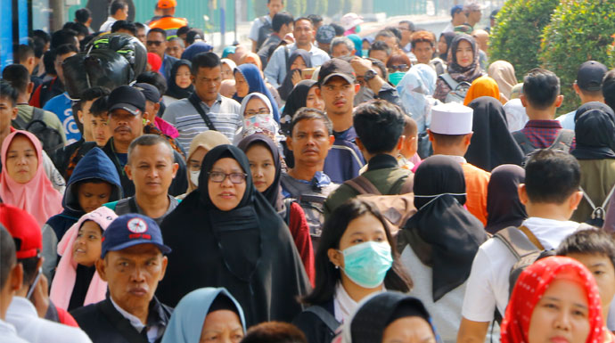

Kota Bandar Lampung merupakan salah satu kota terpadat di Pulau Sumatra dengan kepadatan 5.332/km². Kota Bandar Lampung memiliki luas daratan 169,21 km² yang terbagi ke dalam 20 kecamatan dan 126 Kelurahan. Kota ini berperan sebagai gerbang utama Pulau Sumatera, tepatnya kurang lebih 165 km sebelah barat Jakarta. Menjadikan Bandar Lampung sebagai jalur transportasi distribusi logistik dari Pulau Jawa menuju Sumatera maupun sebaliknya.
Penduduk
| Penduduk | Jumlah |
|---|---|
| Laki - Laki | 603.532 |
| Perempuan | 594.066 |
| Total | 1.197.598 Jiwa |

Dengan total keseluruhan 20 Kecamatan, yang terdiri dari
- Bumi Waras
- Enggal
- Kedamaian
- Kedaton
- Kemiling
- Labuhan Ratu
- Langkapura
- Panjang
- Rajabasa
- Sukabumi
- Sukarame
- Tanjung Karang Barat
- Tanjung Karang Pusat
- Tanjung Karang Timur
- Tanjung Senang
- Teluk Betung Barat
- Teluk Betung Selatan
- Teluk Betung Timur
- Teluk Betung Utara
- Way Halim